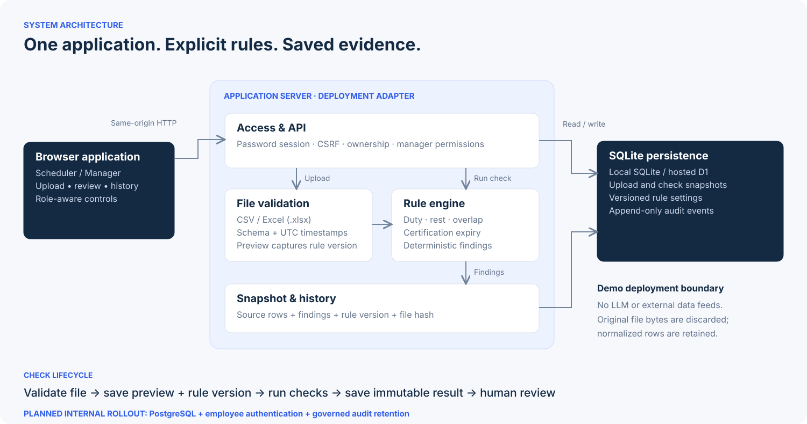
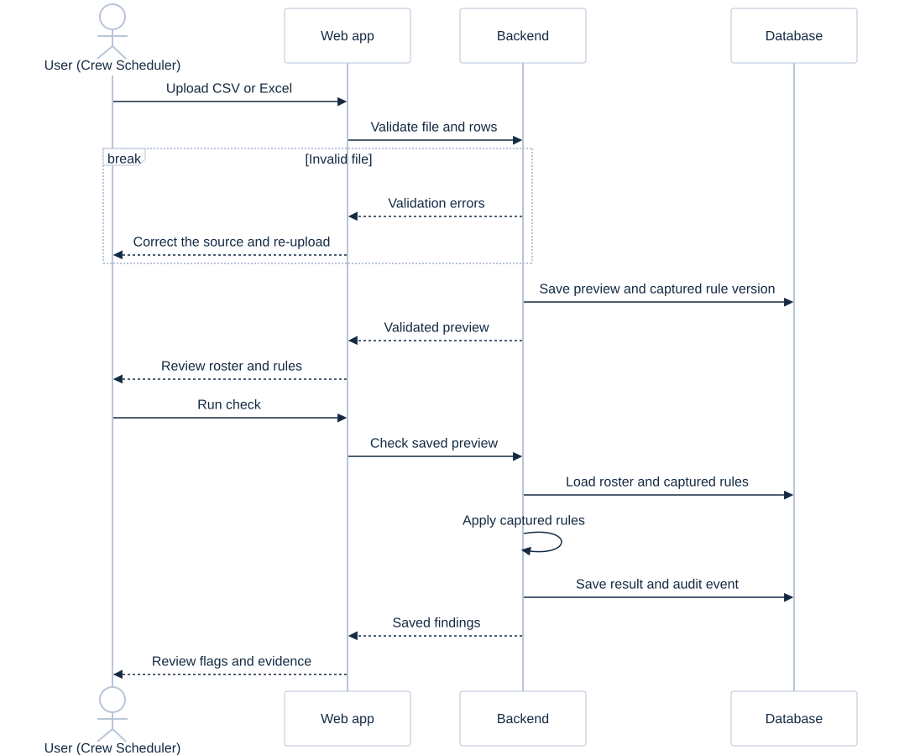

Validate before checking
Reject invalid rows and unsupported files. Normalize explicit timezone offsets to UTC. Preview the roster with its captured rule version.
Validate a spreadsheet, surface evidence, and preserve every check with the rules that produced it.
Illustrative thresholds, synthetic crew data and demonstration roles in isolated visitor workspaces. Actual regulations and production identity requirements are still to be confirmed.
SQLite-based storage for the MVP; PostgreSQL is planned for the internal server deployment.

Reject invalid rows and unsupported files. Normalize explicit timezone offsets to UTC. Preview the roster with its captured rule version.
Compare duty duration, rest intervals, overlapping duties and supplied certification expiry against explicit conditions.
Retain normalized rows, findings, ownership, file hash and policy version. Later threshold edits do not rewrite past checks.
Shared upload and review. Different access to history and configuration.

Upload → preview → check → review evidence.
Revisit own saved checks and read active rules.
All scheduler actions, plus team-wide history.
Publish new thresholds with a recorded reason.
Start with architecture, then use the supplied synthetic roster.
Choose the Scheduler demo role, download the starter CSV or Excel, then choose Browse files to upload it. Review six duties, four crew and the captured rule version.
Run the check. The initial policy produces three findings. Open Jordan's D103: observed rest is 7 hours against a 10-hour minimum.
Choose the Manager demo role. Open the scheduler's saved check and inspect the same evidence, source rows and rule version.
Set duty to 16 hours, rest to 8 hours, and certification to duty start. Add a reason. A fresh upload produces one finding; the original check still has three.
The MVP demonstrates the workflow. These answers define the production system.
Jurisdiction, operation type, approved thresholds, cumulative limits and exceptions. The 12 h / 10 h demo values are not a regulatory claim.
Real roster columns, certification records, cross-roster context, revised schedules and the required retention period.
Production SSO, actual number of users, account provisioning and whether team or base-level permissions are required.
Deployment, backup and recovery, rule approval, monitoring and ownership of human follow-up.
Implementation details, boundaries and a repeatable demo.